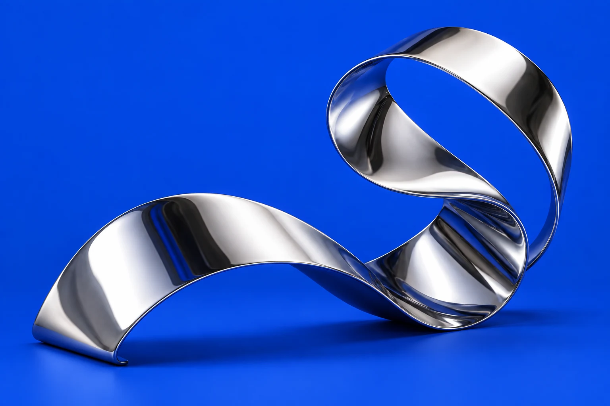

探索项目 ↗01 — 形与感
视觉探索 · 概念示例

探索项目 ↗01 — 形与感
视觉探索 · 概念示例FORM & FEELING
让材质成为视觉语言。
以反射、曲面与色彩的关系为起点，探索理性结构与感性表达的平衡。这是一组为作品集版式制作的视觉概念。
我是 YUQI，一名设计师。
在理性与直觉之间，寻找恰好的表达。
以下为网站展示用概念示例，非真实客户项目。

探索项目 ↗FORM & FEELING
以反射、曲面与色彩的关系为起点，探索理性结构与感性表达的平衡。这是一组为作品集版式制作的视觉概念。
BETWEEN THE LINES
将中英文字形放在同一个视觉场域，以尺度、间距和留白建立阅读节奏。以原生文字排版呈现的设计练习。
SPACE TO THINK
从杂志封面的阅读秩序出发，以非对称构图和大面积留白，寻找信息密度与视觉呼吸感之间的关系。
我关注设计如何让想法变得清晰，也在意它带来的感受。从一个字的间距，到一个完整的视觉系统，我希望每个细节都有它存在的理由。
这里是我的设计空间，记录观察、思考与新的尝试。
好的设计，
始于一次对话。
联系方式即将更新。